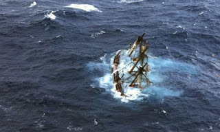
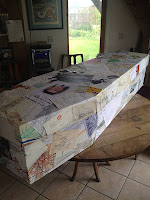

In memoriam HMS Bounty, Claudene
Christian, Robin Walbridge, Dave Harris, Dick Cronin, Cassandra
Jardine, Tom Carter, Richard Morris, Patricia Moran
 |
| HMS Bounty, caught by Hurricane Sandy |
{kind=link}
The ship was HMS Bounty, built
in Nova Scotia in 1960 for the film starring Marlon Brando. I wish I
could describe the thrill it was in the summer of 2011 when I
received a message from Doug Faunt, a deckhand on the Bounty,
telling me that he was reading The Salt-Stained Book, volume
one of the Strong Winds trilogy.
I met Doug later when he took some time away from the Bounty and visited Peter Duck. He was one of the first people to convince me that it was worth publishing the Strong Winds trilogy in electronic format so the stories would pack easily into a sailor's kitbag. Thank you for that advice, Doug.
I met Doug later when he took some time away from the Bounty and visited Peter Duck. He was one of the first people to convince me that it was worth publishing the Strong Winds trilogy in electronic format so the stories would pack easily into a sailor's kitbag. Thank you for that advice, Doug.
Doug and I kept in touch through Facebook and I
watched in horror as the Bounty was caught in the truly strong
winds and mountainous seas of Hurricane Sandy on October 29th 2012 and sank off the coast of North Carolina. Paper copies of
The Salt-Stained Book and A Ravelled Flag went down
with her. Doug was among the crew members who were winched to safety
by the US coastguard but Claudene Christian (a descendant of the 1787
mutiny leader Fletcher Christian) and the ship's captain, Robin
Walbridge, both died – cold, lonely deaths.
I never met Dave Harris, a Strong
Winds reader who died in hospital from New Zealand on October
14th. Dave had suffered from myotonic dystrophy for many
years and, when cancer was additionally discovered, took the stoic
view that a death sentence wasn't so much worse than a life sentence.
Again my relationship with Dave was only through Facebook and a
mutual friend. It made me stop quite still and close my eyes when I
was told that Dave was reading and re-reading the SWT after his
cancer diagnosis and just two weeks before his death. Thank you Dave.
That was a profound and lovely gift.
Strong Winds reader Dick Cronin
was 87 when he died on October 31st. Dick wasn't of the Facebook generation: he left
letters. From February this year, when he discovered The
Salt-Stained Book, until late September when he finished Ghosting
Home he wrote every few weeks, up-dating me with his reading
progress and his response to each book and describing the events in
his life - such as his Ransome-reading boyhood and his time in the
RNVR - that were somehow connected with the stories.
That sounds more orderly than it was.
Dick wrote in a fountain pen which sometimes fell to bits, letters
were stopped and restarted and arrived sometimes two and three in an
envelope, his eyesight was failing … visibly. Then there was
nothing in October and in the first week of November a letter arrived
from his widow, Anne. Dick had died peacefully at home, well cared-for and suffering discomfort rather than pain.
Anne suggested that I might like to raise a glass to his memory.
Actually I shed a few tears and took
the dog for a long walk. I owed Dick those the tears. When he first
wrote to me he said that the SSB had made him soak his
handkerchief and his face as well. The ground was soft under my
feet and the autumn air smelled of fungus and warm, damp leaves. I realized that in every one of the SWT volumes there is the
death and memorial of an octogenarian. What did I think I was doing
including such a pattern of death in a set of stories for children?
There is a moment in the first volume
when Donny, the thirteen year old hero, realizes that he is holding a
drowned man's book.
“Donny shut Sailing
with a snap'Will all this happen to me?', he wondered. Gregory Palmer
– Captain John – had died. His book seemed stained with blood,
not salt. Dry, white blood.”
There's a moment in
everyone's life when we realize that Death Happens. Then we usually
forget and carry on. Until the next time.
“Okay. Captain Palmer was dead.
And that was very sad.
But most old books must have
belonged to people who were dead. All those classics of Granny's –
Hiawatha, Treasure Island, Peter Pan – all the
kids who'd read them when they first came out: they'd all be dead by
now.
Granny was dead as well.”
The children in the
Strong Winds trilogy need to make sense of the past – it's a
common literary theme. But as I walked and thought about
Dick Cronin and the other, even older, readers who have told me that
they like the books, I began to wonder whether I hadn't unconsciously
included such a sequence of deaths and memorials as a way of saying
goodbye to a generation?
Captain Palmer,
Greg Palmer, a fictional character in the SWT, was a real person, a
former owner of Peter Duck. I often think of him when I'm on
board: a yacht, like Donny's salt-stained book, is such a tangible
link.
I'm not going to
make the obvious point that electronic books and internet
communication won't help us to commune with our dead in the same
tangible way. Facebook confers a discomforting immortality of its
own. Every few weeks it suggests that I ask Cassandra Jardine to
'like' my pages. But Cassandra died in May 2012. She was my age, mother of
five children, a brilliant journalist who always used her skills for
good purposes – such as attempting to destigmatise the lung cancer
of which she died. "What a waste that
Cassandra Jardine should have died!" was many people's immediate
reaction. But, as she said herself, “There is no logic – only
biology.”
I feel gratitude
towards Cassandra for coming on board Peter Duck in the summer
of 2011 and writing about The Salt-Stained Book. I feel
gratitude of different kind towards Tom Carter, who also died in May
this year. Tom was the unacknowledged son of journalist Nancy Spain
and Margery Allingham's husband, Pip Youngman Carter. For much of his
life he had suffered from learning disability and and periods of
mental illness. When I was reissuing my biography of Margery
Allingham in 2009 I needed to ask Tom's permission to write about the
uncomfortable facts of his birth. I needed him to tell me about them
from his point of view; I needed to know how he felt.
Tom suffered from
high functioning autism. He was tremendously, obsessively
intellectual but analysis of feelings and relationships did not come
easily to him. I feel honoured that we became friends. My
partner Francis feels the same. We could always tell when one of us
was talking to Tom on the phone. He had an abrupt, strongly-focussed
style of conversation. The last call he made was to express gruff
sympathy with Francis on the loss of his books in a fire. “And how are you
Tom?” “Not too well.”
 |
| Tom Carter's cardboard coffin |
{kind=link}
“Being diagnosed
with inoperable cancer is like walking out of the garden of Eden”
said Cassandra Jardine. As we sat in Richard's garden that August
night in the home that he and Victoria had built, among the roses
and the people that he loved, it was more poignant than all the black
drapes and and the dust and ashes of the chilliest marble mausoleum.
Part of Dick
Cronin's response to the SWT was to re-read Hiawatha.
My godmother, Patricia Moran, gave me my copy when I was a child. She
died on October 21st aged 92 and yes, I will always
treasure that book. Of course I know it's not the object that matters, it's the words. The message of
Hiawatha, which Donny tries to learn, is that the living
mustn't burden the dead with the weight of our
grief. We have to let go.
But it's hard. Very hard indeed.
All my heart is buried
with you
All my thoughts go onward
with you
Come not back again to
labour
Come not back again to
suffer
Where the Famine and the
Fever
Wear the heart and waste
the body
Soon my task will be
completed
Soon your footsteps I
shall follow
To the Islands of the
Blessed
To the Kingdom of Ponemah
To the Land of the
Hereafter